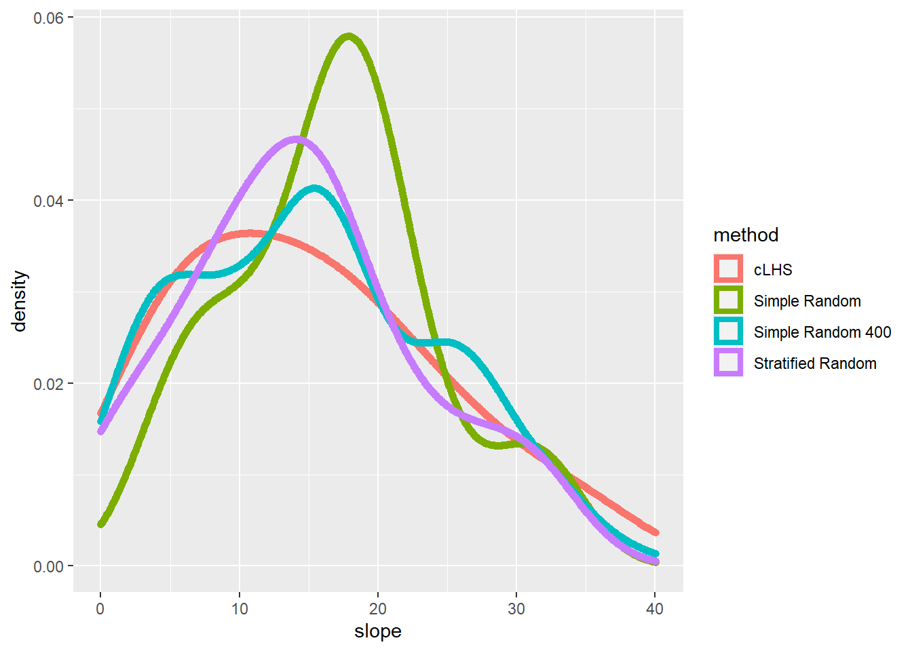
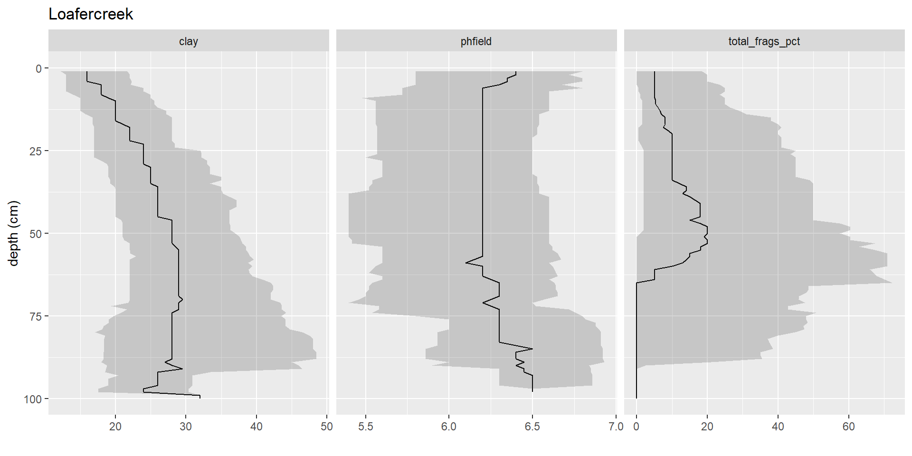

Chapter 9 Evaluating a Sampling Strategy
To gauge the representativeness of a sampling strategy, you can compare the results it produces to the results for other variables you think might coincide with the soil properties or classes of interest (Hengl, 2009). Examples include slope gradient, slope aspect, and vegetative cover. These other variables may be used to stratify the sampling design or to assess the representativeness of our existing samples (e.g., NASIS pedons).
The simple example below demonstrates how to compare several sampling strategies by evaluating how well they replicate the distribution of elevation.
# create a polygon from the spatial extent of the volcano dataset
test <- as(extent(volcano_r), "SpatialPolygons")
# take a large random sample
sr400 <- spsample(test, n = 400, type = "random")
# take a small random sample
sr <- spsample(test, n = 20, type = "random")
# take a small stratified random sample
str <- spsample(test, n = 23, type = "stratified", iter = 1000)[1:20]
# take a cLHS sample
# cs <- clhs(rs, size = 20, progress = FALSE, simple = FALSE)
# Combind and Extract Samples
s <- rbind(data.frame(method = "Simple Random 400", extract(rs, sr400)),
data.frame(method = "Simple Random", extract(rs, sr)),
data.frame(method = "Stratified Random", extract(rs, str)),
data.frame(method = "cLHS", cs$sampled_data@data))
# Summarize the sample values
aggregate(slope ~ method, data = s, function(x) round(summary(x)))## method slope.Min. slope.1st Qu. slope.Median slope.Mean slope.3rd Qu. slope.Max.
## 1 cLHS 1 8 14 15 21 36
## 2 Simple Random 4 12 17 17 20 33
## 3 Simple Random 400 0 8 15 15 22 40
## 4 Stratified Random 0 9 14 15 18 32# Plot overlapping density plots to compare the distributions between the large and small samples
library(ggplot2)
ggplot(s, aes(x = slope, col = method)) + geom_density(cex = 2)## Warning: Removed 23 rows containing non-finite values (stat_density).
# plot the spatial locations
par(mfrow = c(1, 3), mar=c(1,2,4,5))
plot(volcano_r, main = "Simple random", cex.main = 2, axes=FALSE)
points(sr, pch = 3, cex = 1.2)
plot(volcano_r, main = "Stratified random", cex.main = 2, axes=FALSE)
points(str, pch = 3, cex = 1.2)
plot(volcano_r, main = "cLHS", cex.main = 2, axes=FALSE)
points(cs$sampled_data, pch = 3, cex = 1.2)
The overlapping density plots above illustrate the differences between large and small sets of samples using several sampling designs. Clearly the cLHS approach best duplicates the distribution of elevation (because elevation is explicitly used in the stratification process). The contrast is less severe in the summary metrics, but again cLHS more closely resembles the larger sample. Other comparisons are possible using the approaches in the following chapters.
9.1 Exercise: Design a Sampling Strategy
- Using the “tahoe_lidar_highesthit.tif” dataset in the gdalUtils package or using your own dataset (highly encouraged), compare two or more sampling approaches.
- Show your work and submit the results to your coach.